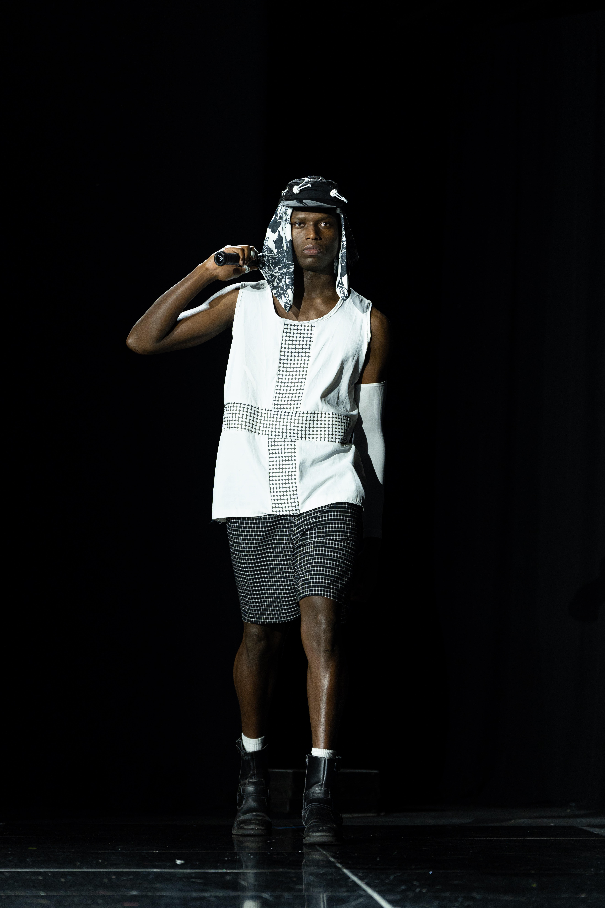
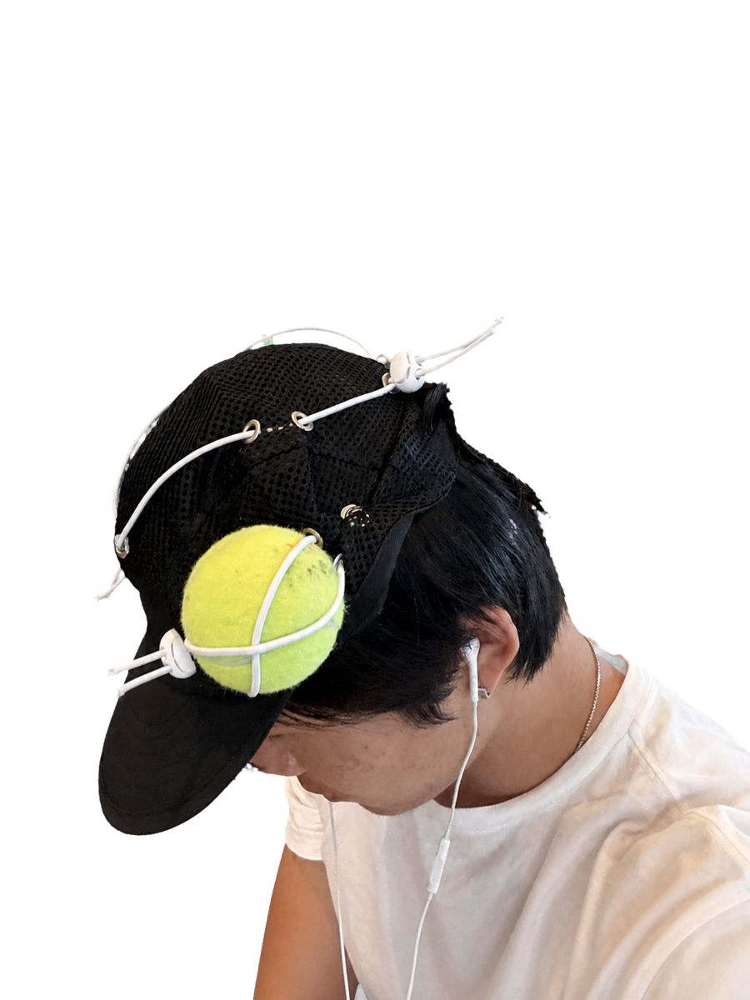
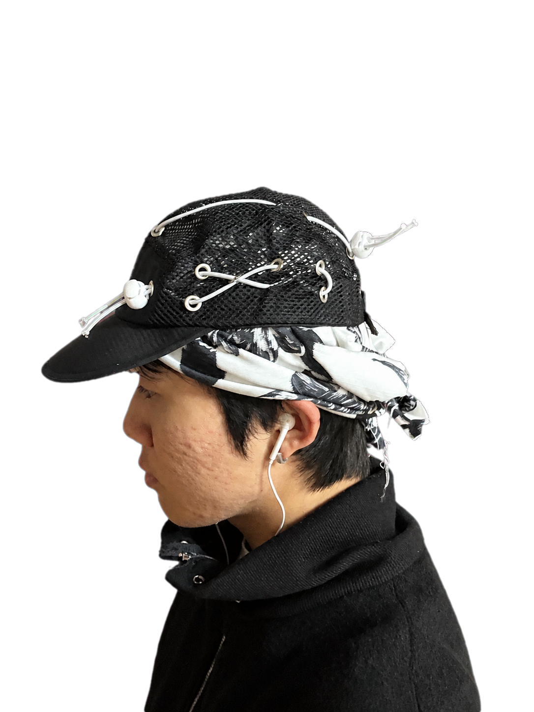
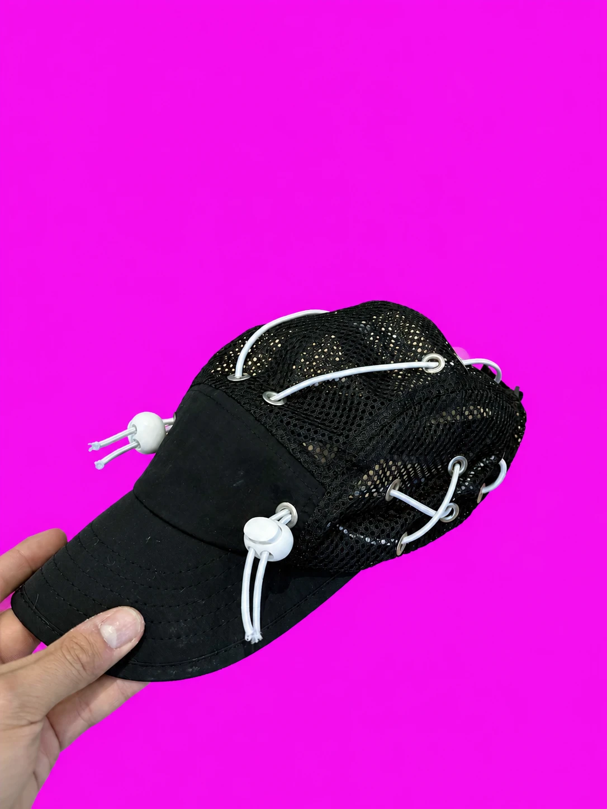
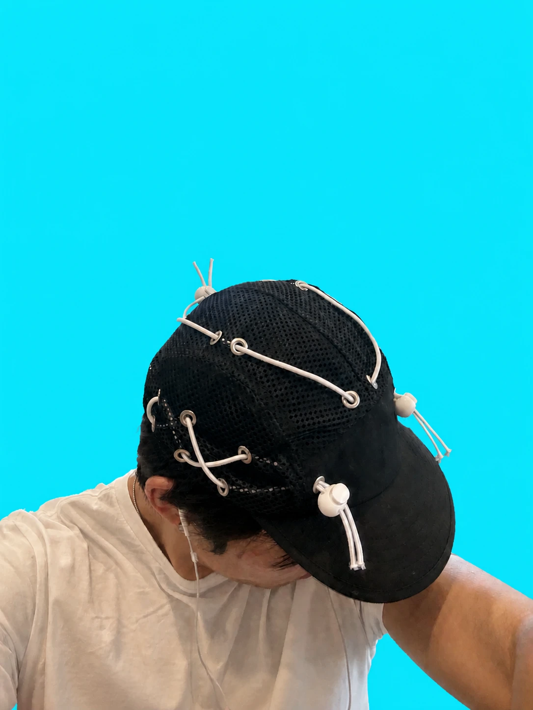
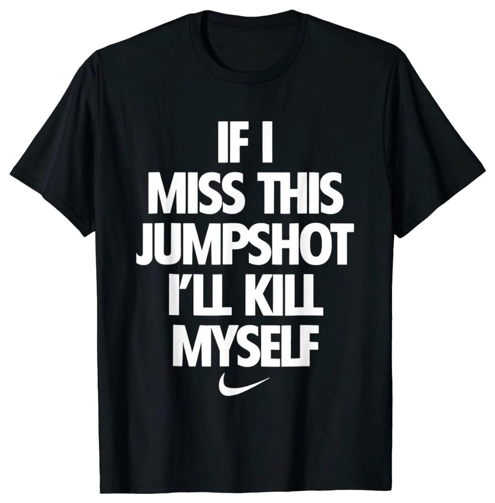

UCLA FAST
Tennis Runway Show



Bandanas


Tennis Hat




- I made a tennis runway fashion line.
- I think you and Shingo—Setinn—are the only two cool tennis streetwear creators in the world.
- I grew up on your work. I’m Korean, born and raised in LA, from the Hypebeast era.
- i want to make tennis clothes that aren’t boring and ride off being a heritage-name. tennis is a universal form of expression and exploration. play with strangers, make friends, explore a city
- I've started talking to the tennis clubs in Philippines, Rio favelas, and meeting up with Shingo in Japan.
- I’m 22 and live in LA. I'm gone for work but I'm back permanently Sept. 17.
